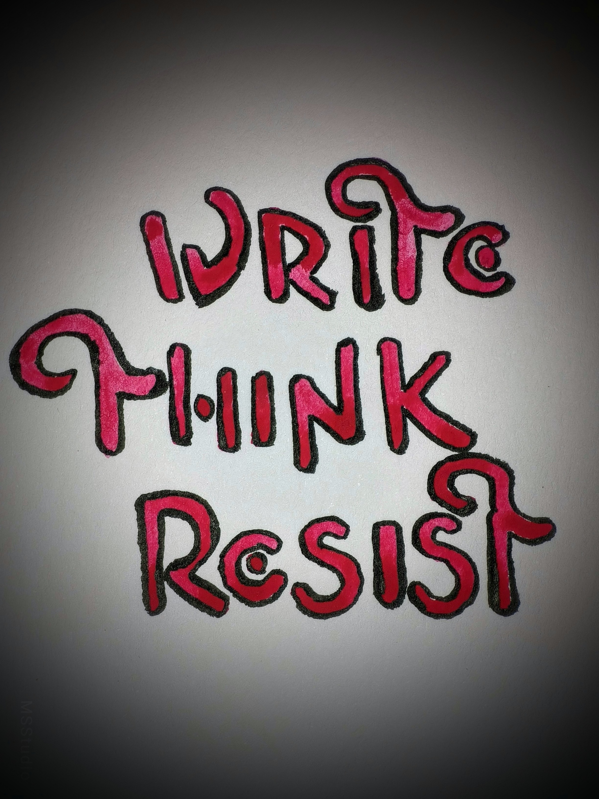
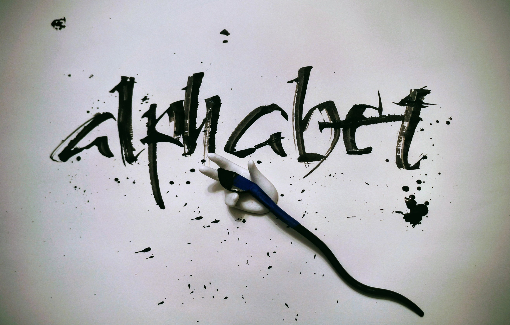

Watercolor using Speedball’s B-2 nib — outlined with Japanese Brush Pen (soft).

Pelikan Royal Blue ink using Steel Brush.

Black India Ink using self-invented ruling pen (the “Cola Pen”).

Stylized Fraktur “B” Capital — experimental wood-burning technique.

Premium Walnut Ink using Steel Brush (smallest size) — outlined digitally.